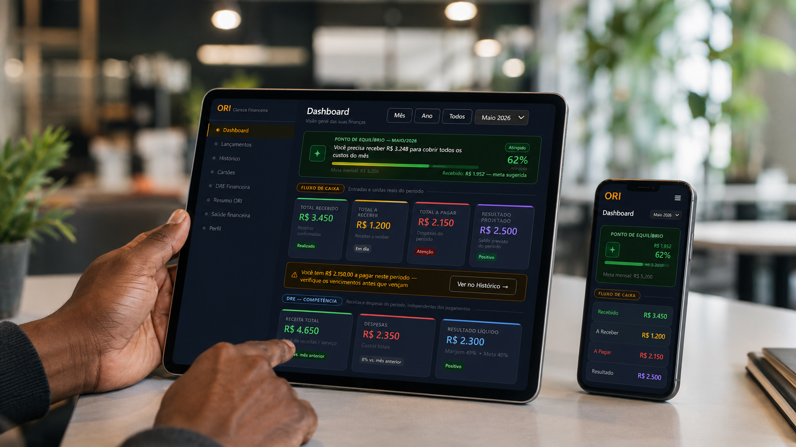

Tive lucro ou prejuízo?
Sua empresa finalmente sabe para onde o dinheiro vai.
Veja se o seu negócio teve lucro ou prejuízo em tempo real, de forma simples, sem depender de planilhas confusas.
Falar no WhatsApp
A dor real
Você vende, recebe, paga contas... mas no fim do mês ainda fica sem saber o que realmente sobrou?
O ORI mostra de forma simples, inteligente, automática e personalizada:
Quanto devo faturar para não ter prejuízo?
Como está a saúde financeira do meu negócio (indicadores)?
Qual a saúde financeira do meu negócio (Diagnóstico ORI)?
Recursos
Tudo online e em telas simples
Saúde Financeira
Indicadores-chave do período
Mês
Ano
Todos
Maio 2026
72/100
Score ORI - Maio/2026
Saudável
Financeiro saudável. As contas a pagar estão pressionando o caixa - priorize vencimentos próximos e confirme recebimentos suficientes.
Margem Líquida
Meta: acima de 25% - Quanto do recebido sobrou após todos os pagamentos
99,7%
Receita Recorrente
Meta: acima de 70% - Percentual de receita de fontes previsíveis
97,8%
Ponto de Equilíbrio
Soma total das despesas - a receita precisa superar para o período fechar positivo
R$ 2.713
Escolha como entrar
Dois caminhos.
Dois caminhos.
O mesmo destino: clareza.
Somente App
Para quem já tem organização básica e quer uma ferramenta melhor do que planilha.
R$ 39,90/mês
- Dashboard completo
- Fluxo de caixa e DRE
- Score ORI de saúde
- Importação OFX e CSV
App + Consultoria ORI
Para quem quer organizar o financeiro com apoio profissional e mais estratégia.
Consultar no WhatsApp
- Diagnóstico financeiro inicial
- Estruturação do plano de contas
- Configuração guiada do sistema
- Acompanhamento financeiro estratégico
- Orientação para uso do app